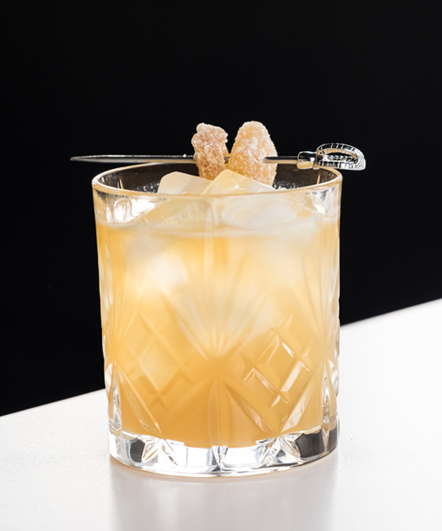

Penicillin Cocktail

So far I have given you a chicken pot pie recipe, which covers the main course.
I've also given you a peanut butter cookie recipe, which covers the dessert portion of the meal.
But what is a good meal without a beverage? Answer, not a very good meal.
So let's remedy this with an adult beverage that I think will pair with this meal.
Discalimer: I am not 100% certain that this will pair, I am not an expert.
Ingrediants
- 4 thin slices of ginger, peeled and about 3/4 inch round
- 2 ounces blended scotch
- 1 ounce fresh lemon juice
- 3/4 ounce honey syrup
- 1/2 ounce single malt scotch
- Ice for serving
- Garnish candied ginger, ginger root or lemon peel
Steps
- In the bottom of a cocktail shaker, gently mash the ginger with a wooden spoon
until it is mashed and juices are released, approximately 15 seconds.
- To the cocktail shaker, add the blended scotch, lemon juice and honey syrup
with a handful of ice. Shake until cold.
- Strain the drink into a lowball glass with once large ice cube.
- Carefully pour the single malt scotch over the back of a spoon just above the surface
of the drink, creating a layer on top. Garnish with candied ginger, ginger root or lemon peel and serve.